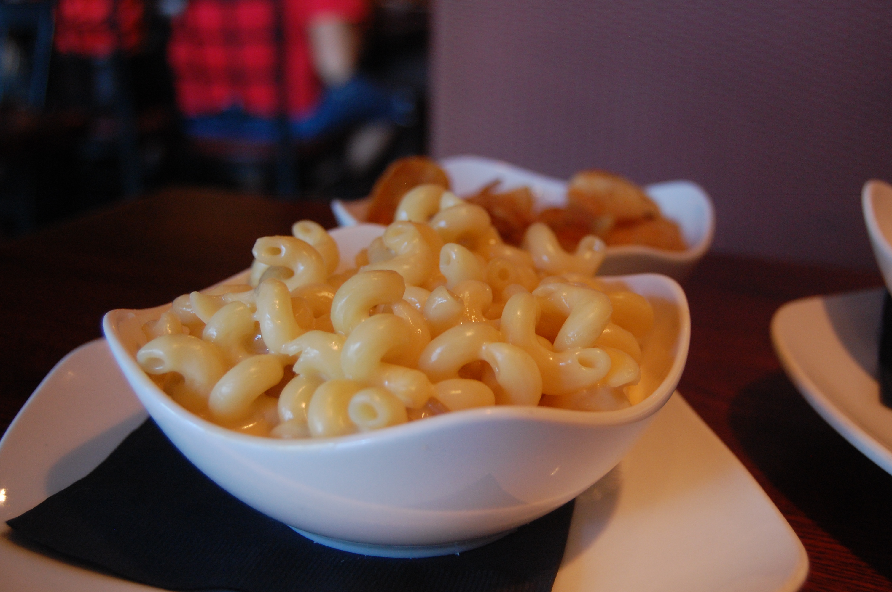

Home
 You know it, you love it, and you’ve probably eaten it at every family get together. Yep, we’re talking about macaroni and cheese. Everyone makes their version of mac and cheese a little differently. Some bake it, some cook it on the stove top, and some pour it out of a blue box but however you make it, you know it’s going to be a delicious addition to your meal.